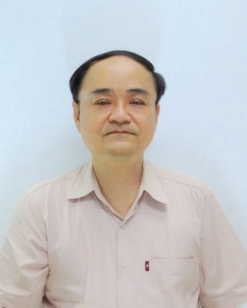
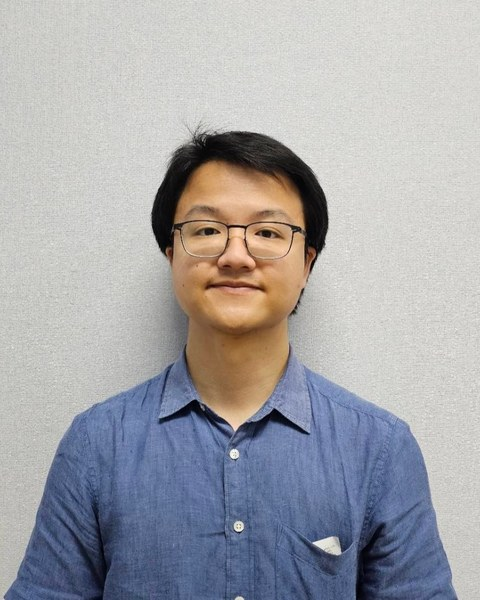
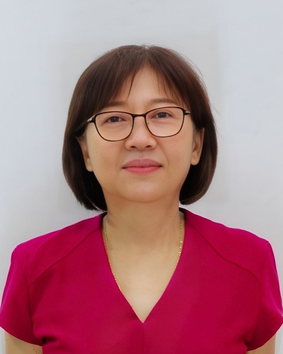
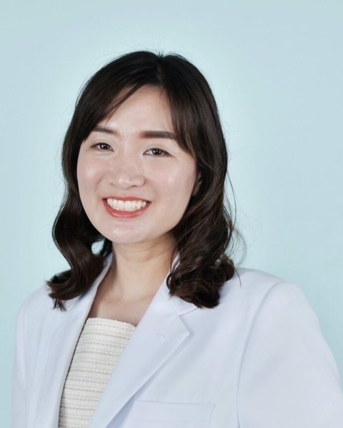
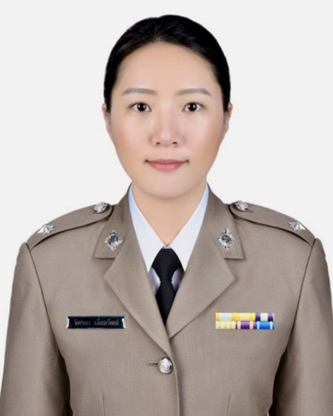
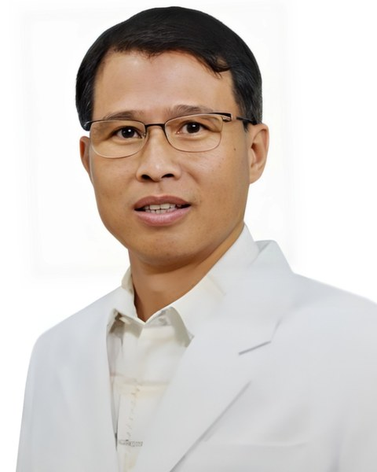

อายุรกรรม
นพ. พีรพงษ์ เต็งธนกิจ
อายุรศาสตร์โรคหัวใจ
เวลาออกตรวจ
- จันทร์–ศุกร์ 08:30–12:00, 16:00–20:00
- เสาร์–อาทิตย์ 16:00–20:00
เลือกแผนกหรือค้นหาชื่อแพทย์ เพื่อดูวันและเวลาออกตรวจของแพทย์แต่ละท่าน และส่งข้อมูลนัดหมายให้เจ้าหน้าที่ติดต่อกลับ

อายุรศาสตร์โรคหัวใจ
อายุรศาสตร์

อายุรศาสตร์โรคหัวใจ
อายุรศาสตร์ผู้สูงวัย

อายุรศาสตร์โรคระบบประสาทและสมอง
อายุรศาสตร์โรคติดเชื้อ

กุมารเวชศาสตร์
กุมารเวชศาสตร์

โรคระบบทางเดินหายใจและเวชบำบัดวิกฤต
รังสีวิทยาวินิจฉัย

รังสีวิทยาวินิจฉัย
แพทย์หู คอ จมูก

ศัลยกรรมทั่วไป
ศัลยกรรมกระดูกและข้อ